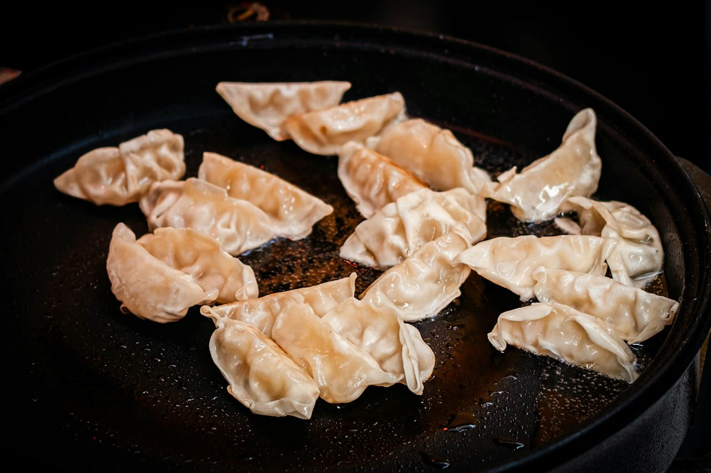

Pan-Fried Turkey Dumplings
Ground turkey dumplings seasoned with tamari, ginger, and garlic — boiled until they float, then pan-fried crisp in sesame and avocado oil, with a spicy tamari mayo for dipping.
Chinese · High Protein · Dinner · Meal Prep

Per serving
488kcal
28gprotein
Makes 4 servings. Whole batch: 1950 kcal, 112g protein.
Ingredients
- Filling
- Wrap + Fry
- Dipping Sauce
Steps
- Mix turkey, tamari, sesame oil, ginger, garlic, scallions, and white pepper until just sticky. Don't overwork it.
- Put a heaping teaspoon of filling in the center of each wrapper. Wet the edges, fold corner to corner, and press out the air as you seal.
- Boil in batches in salted water until they float, plus about 1 more minute. Drain well and let the surface steam dry.
- Heat avocado and sesame oil in a nonstick or cast iron pan over medium-high. Pan-fry the boiled dumplings until deep golden and crisp on both flat sides, 2 to 3 minutes a side.
- Whisk tamari, sriracha, and mayo for the dipping sauce. Serve hot.
Cook's notes
Boil-then-fry means the filling is always cooked through and the wrapper gets properly crisp. Freeze uncooked dumplings on a sheet tray, then bag them — boil straight from frozen and add a minute.